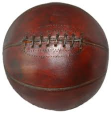

Basketball Designs
On this page we will be exploring the basketball designs over the years. We are going to be comparing the start of basketball to modern day basketball.
1891
In 1891 the first ever basketball was created by Dr. James Naismith. This basketball was made using soccer ball. The nets were made using peach baskets with their bottoms closed. But if you still saw someone playing it you would assume they are playing basketball or netball. The rules of the first basketball game was really different from todays rules. When you had the ball you weren't allowed to run or dribble with the ball. But shooting was allowed, if you wanted to shoot then you needed to do it with two hands instead of one or else you would be breaking the rules. To score a point you would need to shoot and the ball would need to stay in the bottom of the peach basket. When the ball would go out of bounds the thrower had to throw it within 5 seconds which is a rule that I like. The games only had two 15 minute halves with 5 minutes of rest between each half. There are more rules but I think that these are the main ones that you need if you want to play the game.

Present Day
Looking at basketball today and looking at basketball from when it started really shows us how much basketball has changed over time. Now we can dribble, shoot with one arm, do layups, dunk, and many more things. We now have much more freestyling in basketball so you can see many different play styles. So in conclusion it is really nice to see the way things progress overtime, when something doesn't start out well, it doesn't mean that it wont end up well.